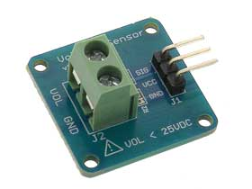
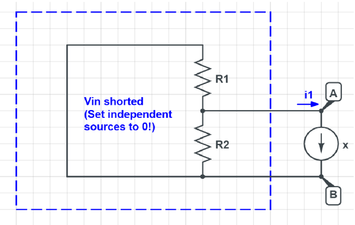
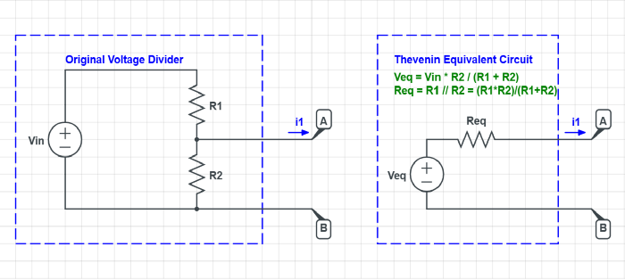

Crystal oscillator#
Author : Mahdy Albaji
contact : mahdyalbajieng@gmail.com
Layout :#
1- Introduction#
2- What is a crystal oscillator?#
3- Application of crystal oscillator#
4- Types of crystal oscillators#
5- Types of crystals in terms of frequency#
6- Price range of crystal oscillators#
7- How crystal oscillators work#
8- Difference between crystal and oscillator#
9- Tips to know when working with the oscillator#
10- Quartz crystal oscillator#
11- Example#
12- Microprocessor clock with quartz crystal#
13- Example#
14- Conclusion#
15- References#
Introduction#
Crystal oscillators are essential components widely used in electronic circuits and systems.
They function as highly stable frequency sources, relying on the mechanical resonance of piezoelectric crystals, typically quartz. When an alternating voltage is applied to the crystal, it vibrates at a precise frequency determined by its size and shape. This inherent stability makes crystal oscillators critical in various applications, including clocks, radios, computers, and communication devices. Their ability to provide accurate timing and frequency control is crucial for ensuring the reliable operation of modern electronic systems.
What is a crystal oscillator?#

Figure(1): Crystal oscillator
A crystal oscillator is an electronic component that It uses the mechanical resonance of a vibrating piezoelectric crystal.
Its main task is to produce electrical signals with accurate frequencies in the range of 16 MHz It has many applications in electronic circuits. For example,One of the most important uses of crystal oscillator in digital watches is that They are found all over the world, since the crystal oscillator has a very high frequency stability. This part is used in radio transmitters to create a carrier wave.
Application of crystal oscillator#
Generally, crystal oscillators are used in microprocessors and microcontrollers to provide clock signals.
This crystal oscillator is used to generate the clock pulses needed to synchronize all the internal operations of the processors.
One of the most important applications of this type of oscillator is that It is used to generate fixed frequencies directly in electrical circuits.
This characteristic of crystal oscillators makes them widely used in the telecommunications industry. An industry in which the discussion of stable signals is very important.
Oscillators are also used in precision instruments (e.g. digital clocks) that Accurate time reference is required.
Types of crystal oscillators#
In the topic of microcontrollers and circuits, we have two types of crystal oscillators.
internal crystal oscillator and external crystal oscillator which In this section, we will fully examine these two types of oscillators.
Internal crystal oscillator
External crystal oscillator
Internal crystal oscillator#
This type of oscillator consists of a circuit that includes a resistor and a capacitor.
The advantages of internal crystal oscillators include:
It is easy to use because of its simplicity.
It has a precise design, so there is no need to worry about the selected frequency.
It does not require any external parts.
Among the most important disadvantages of the internal oscillator, the following can be mentioned:
Lack of precision and stability
The conditions of the capacitors and resistances of these oscillators change with the temperature change.
External crystal oscillator#
The meaning of the external crystal oscillator is that The crystal part is located outside the oscillator structure.
The advantages of the external crystal oscillator include very high accuracy and stability at a very low cost The rate of frequency error is very low.
In general, the external oscillator does not have any special disadvantages due to the high quality of construction and fixing the problems of the previous versions.
Types of crystals in terms of frequency#
There are 2 types of crystals in terms of frequency shape. High frequency and low frequency.
High frequency crystals are usually cut into simple rectangular plates.
But low-frequency crystals, which are mostly used in digital clocks, They are cut in the form of a diapason.
Another type of these oscillators are timing quartz crystals which They are used for frequencies ranging from hundreds of kilohertz to hundreds of megahertz.
Quartz crystal is used inside testing and measuring instruments.
Figure(2): Quartz crystal
Price range of crystal oscillators#
On average, more than two billion crystals are produced every year.
This type of oscillator has a lot of variety in terms of the number of bases, how it works and the type of crystal used Due to this diversity, they also have different price ranges.
How crystal oscillators work#
When we cut and mount a quartz crystal in the right shape, We can bend it by placing it in an electric field (applying a voltage to a nearby electrode or to the crystal).
This feature is called piezoelectricity.
In oscillators, when we interrupt or remove the electric field, As the quartz returns to its original shape, it generates an electric field and this causes a voltage to be generated.
This quartz crystal behavior is similar to a circuit consisting of an inductor, capacitor and resistor (RLC circuit) with a precise resonant frequency.
Difference between crystal and oscillator#
reminder :#
(Clock Signal) : In electronics, and especially in synchronous logic circuits, the clock signal (in English: clock signal), clock pulse, or clock, is a signal that regularly oscillates between two states (High and Low), and is used to coordinate the operation of circuit parts. Digital is used.
This definition is as follows: “Each processor has a speed for processing, which is called a clock.” The crystal needs several logic gates and stabilizing capacitors to generate the clock They are usually built into the microcontroller. For this reason, the crystal is connected to two pins of the microcontroller.
Tips to know when working with the oscillator#
One of the most important points in working with oscillators is to use only one crystal oscillator in designing circuits. Prevent the occurrence of electronic self-stability errors (Metastability In Electronics).
Also note that the crystal is a cut piece of quartz stone and It has regular vibrations and is placed between two spring-like parts.
That is, it is more like a mechanical part than an electronic one, and that is why it is very sensitive to impact.
reminder :#
Frequency Stability : One of the most important features of all oscillators is “Frequency Stability” or in other words, the ability of the oscillator to provide a stable output frequency with variable load conditions.
Some factors influencing the frequency stability of an oscillator in general include the following:
Temperature changes
Load changes
Voltage changes in the DC power source
By properly choosing the elements used in the resonant feedback circuit such as the amplifier, the frequency stability of the output signal can be improved. But in the tank circuit of LC and RC oscillators, there are limits for the achievable frequency stability.
Quartz crystal oscillator#
To achieve high levels of frequency stability, it is necessary that “Quartz Crystal” undertakes the task of frequency detection. In this way, an oscillator circuit is created, which is generally called “Quartz Crystal Oscillator”.
When a voltage source is applied to a thin piece of quartz crystal, its shape changes. This property in the crystal is called Piezo-Electric Effect. Piezo-electric effect is a property of the crystal in which the electric charge creates a mechanical force by changing the shape of the crystal. Conversely, the mechanical force on the crystal can also produce an electric charge.
Piezo-electric parts can be placed in the category of transducers. These parts convert one type of energy into another type of energy (electrical to mechanical and mechanical to electrical). The piezoelectric effect causes mechanical vibrations or electrical oscillations that can be used instead of the LC tank circuit in oscillators.
There are different types of crystal materials that can be used as oscillators. One of the most famous types of these crystalline materials for electronic circuits is quartz mineral due to its high mechanical strength.
The quartz crystal used in the quartz crystal oscillator is a very small and narrow blade of quartz that has parallel cuts on both sides and is connected to metal parts. to make the required electrical connections. The physical dimensions and thickness required for this piece of quartz crystal are controlled with special precision. Because this piece determines the final or fundamental frequency of oscillations. Fundamental frequency is also known as “characteristic frequency” in general.
Once the crystal piece is properly cut and shaped, it cannot be used at other frequencies. In other words, the dimensions and shape of the crystal determine the fundamental frequency of oscillations in the crystal.
The crystal characteristic or characteristic frequency is inversely proportional to the physical thickness of the crystal between the two metal plates. A mechanically vibrating crystal can be represented by its equivalent electrical circuit. This electric circuit includes small resistance R, large inductance L and small capacitor C. The figure below shows the equivalent circuit of a quartz crystal:
Figure(3): Quartz Crystal Equivalent Model
According to the shape of the equivalent electric circuit of the quartz crystal, including an RLC series circuit in parallel with the capacitor cP is RLC series circuit, representing mechanical vibrations of crystal and parallel capacitor Cp It represents the electrical connections of the crystal. Quartz crystal oscillators tend to oscillate at the resonant frequency of their series RLC circuit.
The equivalent impedance of the crystal includes a series resonance. In this case, the capacitor Cs with inductance Ls It resonates at the operating frequency of the crystal. This frequency, called the frequency of the crystal series or fs is known As well as this series frequency, there is also a secondary frequency that occurs as a result of parallel resonance. This parallel resonance between series elements Ls and Cs and parallel capacitor Cp it happens.
Figure(4): Crystal Impedance against Frequency
By increasing the frequency at the output of the oscillator, at a certain frequency the interaction between the capacitor and the series inductor Cs and Ls creates a series resonant circuit. This series resonant circuit minimizes the output impedance of the crystal. The output impedance of the crystal in this case with Rs equals This point is called the resonant frequency of the crystal series and with fs is shown. At frequencies lower than this frequency, the crystal becomes capacitive.
If the oscillation frequency of the oscillator is greater than the series resonance point of the circuit, the crystal oscillator will reach the parallel resonance frequency point (Fp), will have a selfie feature. At this point of frequency, the interaction between the series inductor (Ls) and parallel capacitor Cp It creates a tuned LC tank circuit. For this reason, the impedance at both ends of the crystal reaches its maximum possible value.
It can be seen that the quartz crystal oscillator is a combination of series and parallel tuned resonant circuits. This oscillator produces oscillating signals at two different frequencies. Depending on how the crystal is cut, these two different frequencies may have a slight difference.
Since the crystal oscillator cannot be tuned for two frequencies at the same time, it is necessary to tune the crystal oscillator circuit for a specific frequency. Because the crystal shows its oscillatory property only in one of the series or parallel resonance frequencies.
Therefore, depending on the circuit specifications, a quartz crystal may operate as a capacitor, inductor, or series or parallel resonant circuit. To make this clear, we can plot the crystal reactance as a function of frequency. The following figure shows the reactance of the crystal in terms of frequency:

Figure(5): Crystal Reactance against Frequency
Because at frequencies lower than fs and frequencies higher than fp The crystal is capacitive, so the series reactance at frequency fs Inversely with the capacitor Cs It is proportional. between frequencies fs and fp , the crystal shows the self-self property. Because two parallel capacitors cancel each other out.
Therefore, the series resonance frequency relation for the crystal (fs) is given as follows:
\begin{equation}
fs = \frac{1}{2π sqrt(Ls Cs)}
\end{equation}
The parallel resonance frequency for the crystal (fp) occurs when the LC series arm reactance with the parallel capacitor reactance cp is equal. This frequency is given as follows:
\begin{equation}
fp = \frac{1}{2π sqrt(Ls (\frac{Cp Cs}{Cp + Cs}))}
\end{equation}
Example-1#
The circuit of a crystal oscillator has elements with the following values: $\(Rs = 6.4 Ω , Cs = 0.09972pF , Ls = 2.546mH \)$
If the capacitor between the two terminals of this crystal (Cp) an equal amount 28.68 pF have, calculate the value of the fundamental frequency and the frequency of the secondary resonance of the crystal.
Solution: Resonance frequency of crystal series or the same fp It is calculated as follows:
\begin{equation}
fs = \frac{1}{2π sqrt(Ls Cs)}
\end{equation}
\begin{equation}
fs = \frac{1}{2π sqrt(2.546 (mH) * 0.09972 (pF))} = 9.987MHz
\end{equation}
The parallel resonance frequency of the crystal or fp It is also calculated as follows:
\begin{equation}
fp = \frac{1}{2π sqrt(Ls (\frac{Cp Cs}{Cp + Cs}))}
\end{equation}
\begin{equation}
fp = \frac{1}{2π sqrt(2.546mH (\frac{28.68 (pF) * 0.09972 (pF)}{28.68 (pF) + 0.09972 (pF)}))}
\end{equation}
It can be seen that the difference between the fundamental frequency of the crystal (fs) and (fp) Very small and approx 18kHz is.
However, in this frequency range, the Quality Factor of the crystal is a very large number. Because the inductance of the crystal is much larger than its capacitance or resistance values. For this example, the quality coefficient of the crystal oscillator at the series resonance frequency is given as follows:
\begin{equation}
Q = \frac{XL}{R} = \frac{2π fL}{R} = \frac{2π × 9.987 ×10^6 × 0.002546}{6.4}
\end{equation}
The magnitude of the quality factor in this example (25000), due to the large ratio XL/R . The quality factor of most crystal oscillators is in the range of 20,000 to 200,000. But the quality coefficient of the tank circuit set in the best LC oscillators is much less than 1000. A large number of the crystal quality coefficient represents a better frequency stability of the crystal in its working frequency. Due to its better frequency stability, this mineral is widely used to make crystal oscillator circuits.
We observed that the quartz crystal has the same resonant frequency as the tuned LC tank circuit. with the difference that its quality factor is much larger. Larger quality factor, due to series resistance (Rs) small crystal oscillator occurs. Consequently, quartz crystal is a good choice for use in high frequency oscillators.
Microprocessor clock with quartz crystal#
It is possible to end the topic of quartz crystal oscillators without mentioning crystal clock microprocessors. In general, all microprocessors, microcontrollers, PICs and CPUs use a quartz crystal oscillator in their frequency determination section to generate the desired clock waveform. Because we know that crystal oscillators provide the highest frequency accuracy and stability compared to resistance-capacitance (RC) and self-capacitance (LC) oscillators.
CPU clock indicates how fast a processor can work and perform information processing operations with a microprocessor, PIC or microcontroller. clock speed 1MHz For these parts, it means that this processor can perform one million internal data processing operations per second in each clock cycle. Generally, all a microprocessor needs to generate a clock waveform is a crystal and two ceramic capacitors with values between 15 and 33 picofarads. The figure below shows a microprocessor oscillator:

Figure(6): Microprocessor Oscillator
Most microprocessors, microcontrollers and PICs have two oscillator pins called OSC1 and OSC2 have .
These pins are connected to an external quartz crystal circuit or a standard RC oscillator network or even a ceramic resonator. In this microprocessor application, the quartz crystal oscillator produces a train of continuous square wave pulses whose fundamental frequency is controlled by the crystal itself. This fundamental frequency controls the processor device. For example, the master clock and system timing are set by this fundamental frequency.
Example-2#
Next, by giving another example, we will further examine the quartz crystal oscillator.
The equivalent circuit of a quartz crystal oscillator has the following values after cutting:
Calculate the series and parallel oscillation frequency of the crystal.
Solution: The series oscillation frequency is calculated as follows:
\begin{equation}
fs = \frac{1}{2π sqrt(Ls Cs)}
\end{equation}
\begin{equation}
fs = \frac{1}{2π sqrt(3 * 0.05 * 10^-12)} = 9.987MHz
\end{equation}
The parallel oscillation frequency is given as follows:
\begin{equation}
fp = \frac{1}{2π sqrt(Ls (\frac{Cp Cs}{Cp + Cs}))}
\end{equation}
\begin{equation}
fp = \frac{1}{2π sqrt(3 (\frac{10 * 10^-12 * 0.05 * 10^-12}{10 * 10^-12 + 0.05 * 10^-12}))}
\end{equation}
Therefore, the frequency of oscillations for the crystal oscillator is between 411kHz and 412kHz will be.
Conclusion#
Crystal oscillators are essential components in a wide range of electronic devices, providing stable and precise frequency signals crucial for timing and synchronization. Their ability to maintain accuracy and consistency has made them a foundation in telecommunications, computer systems, and consumer electronics. As technology advances, innovations in crystal oscillator design continue to enhance their performance, enabling higher frequencies, lower power consumption, and increased reliability, which are vital for modern applications such as mobile devices, GPS systems, and high-speed communication networks.